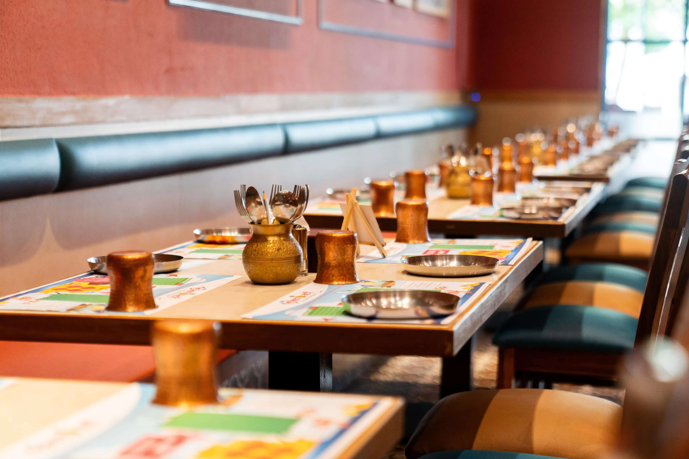
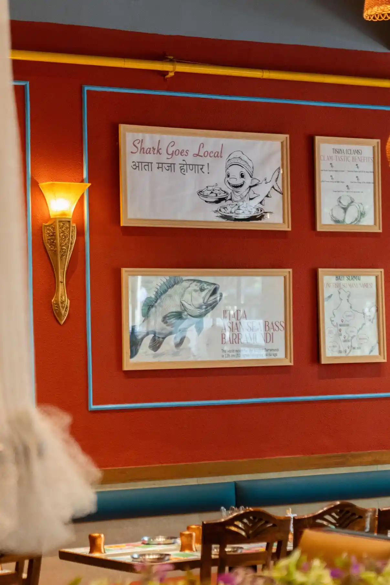
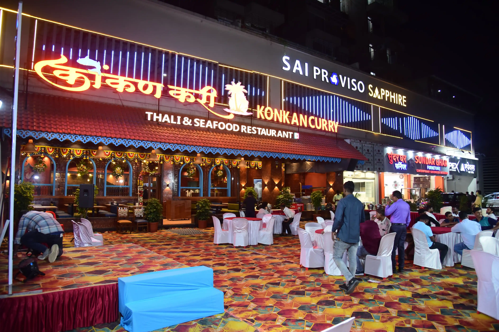
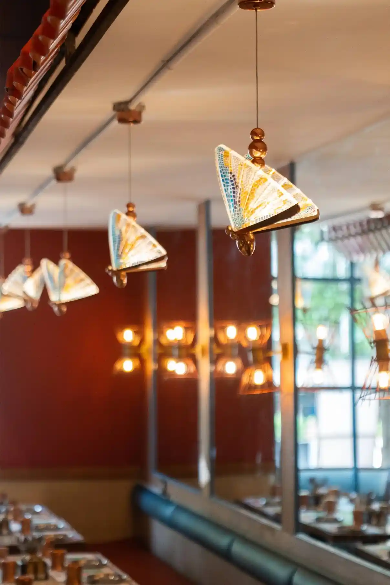

About Us
Where Coastal Tradition Meets Refined Dining

Rooted in the Konkan Coast
Konkan Curry was founded on a simple belief: that coastal Indian cuisine deserves a stage that reflects its depth and sophistication.
Our journey began with a passion for the vibrant culinary traditions of the Konkan, a strip of land defined by the rhythm of the tides and the richness of its spices. We set out to create a destination where these traditions are not just preserved, but elevated through refined technique and a modern aesthetic.
The Founders
Konkan Curry Sea Food Restaurant
Authenticity, Technique, and Respect for Ingredients
We believe the best food is made with a deep respect for the source. Our kitchen is a celebration of the coast's bounty.
Fresh Coastal Ingredients
Sourced daily from local harbors, our seafood is the star of every plate. We never compromise on freshness.
Traditional Recipes
Our masalas are ground in-house using age-old family recipes passed down through generations of coastal cooks.
Contemporary Presentation
While our flavors are traditional, our presentation is artful, creating a dining experience that appeals to all senses.
Chef Vishal Talegaonkar
"Coastal cooking is about understanding the soul of the ingredient. You don't master it; you respect it."
With over a decade of experience in premium kitchens across India, Chef Vishal brings a meticulous approach to coastal dining. His expertise lies in balancing the bold, punchy flavors of Konkan masalas with the delicate nature of premium seafood.
Under his leadership, the Konkan Curry kitchen has become a laboratory of flavor, where traditional techniques like slow-simmering and tawa-searing are perfected daily.
Why Guests Keep Coming Back
From the first bite to the final sip, every detail at Konkan Curry is crafted to create an experience worth returning to.
Authentic Konkan Recipes
Time-tested recipes sourced from coastal households and heritage archives.
Fresh Daily Seafood
Our procurement team hand-selects the catch every morning for absolute quality.
Warm Family Hospitality
Rooted in Indian traditions, we treat every guest like a member of our family.
Elegant Dining Experience
A sophisticated ambience designed to complement our refined culinary offerings.
Designed for Memorable Dining
Every corner of Konkan Curry is crafted to provide a sense of refined tranquility, allowing you to focus on the flavor and company.






Milestones Along the Coast
The Vision Begins
Konkan Curry opens its first doors with a mission to redefine coastal Indian dining.
Signature Menu Launch
Our now-famous Surmai Curry and Prawn Gassi are introduced, becoming instant classics.
Expansion to Kharghar
We expanded our footprint, bringing our premium experience to a wider audience in Navi Mumbai.
Recognition & Awards
Honored as the 'Best Coastal Dining Destination' for our commitment to authenticity.
Experience Coastal Dining at Its Finest
Join us for an evening of authentic flavors, premium hospitality, and memories that linger long after the last bite.